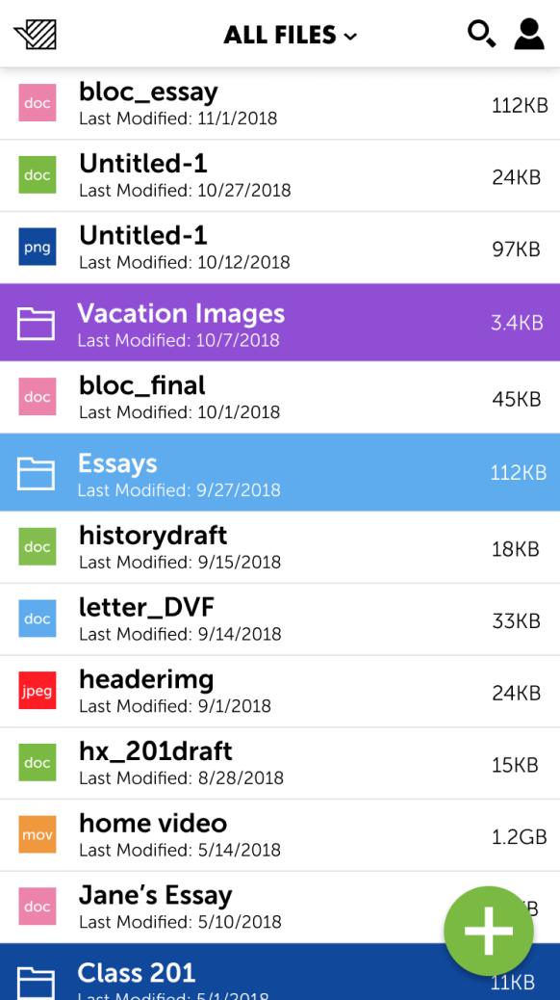
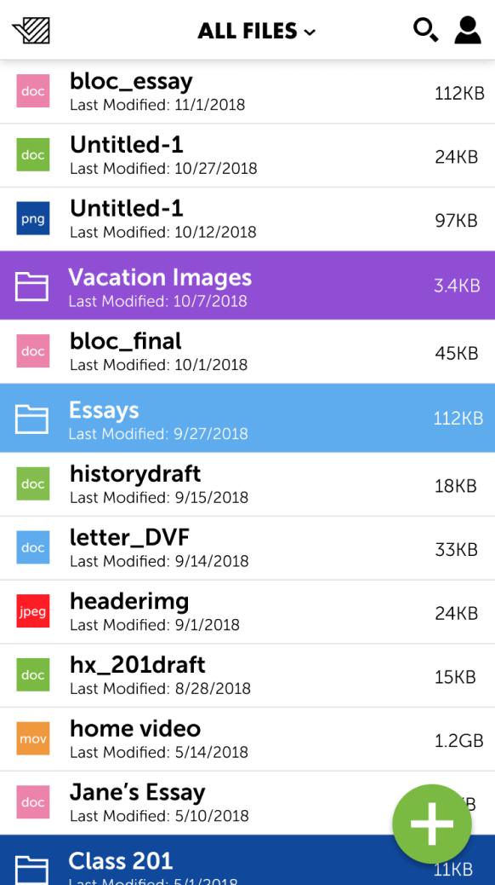

Verre
Desktop and Mobile Storage ApplicationRole
Branding - Visual Design - Prototyping - User Testing

Overview
There are many storage applications out there, yet so many are the equivalent of an empty white room. Whether people just need a place to keep old files or balance various projects at once, as a designer, I wanted to help create an experience that was less of a blank box and more like a Google playground workplace. Despite a rough start and lengthy turnaround time, I learned a lot about about how to design better and how to think like a better designer.
Problem
The client had a very generic idea for a cloud storage/organization app to target the needs of a particular audience. Not only in upholding the expected features of a storage app such as saving/creating content, organizing, and uploading files, but also to incorporate a more social aspect to the app to generate growth via ‘network effect’.
Solution
To create something different without reinventing the wheel, I needed to accurately articulate the specific brand persona as well as build fluid usability in order to separate the Verre app from top competitors. To develop something that can compete with current cloud storage applications, I focused on unique branding that also tied in with addressing the user’s needs . In branding I focused on three aspects: transparency, boldness, and fun.
DISCOVERY
When first solving this design problem, I first had to understand the industry and what users expect.
User Survey
I needed to find the alignment between what precedents are doing and what users needs. Also, if those needs are not met, knowing how and why will help dictate specific design decisions down the line. Though a lot of good information came from the user survey, there were a few specific findings that had more influence on the overall design than others.
Some Questions:
- What is the main reason you use cloud storage?
- How often do you edit others’ files?
- Out of all the features, which is the most important to you?
- About how much storage do you currently utilize in total?
- Which cloud storage application do you use?
- Have you ever STOPPED using any [of these] cloud storage applications?
-
61%
Value syncing files most
-
50%
Use 1-10GB
-
84%
Upload primarily Text Documents
-
73%
Use Google Drive
-
48%
Stopped using DropBox
-
10%
Edit others' files
The most important finding from these statistics is that most users DO NOT collaborate or share files. This is a vital point due to the client asking to incorporate these aspects to generate a ‘network effect’. Another interesting find was that many users ceased their usage of DropBox. As a result, I paid closer attention to the ‘cons’ of DropBox to avoid their mistakes. In contrast, I saw what Google Drive got right as a basis to help develop ideas that would make Verre standout.
User Personas
To better design for users, creating personas helped maintain design decisions to help answer problems people have.

Jim
Age: 17 // Location: San Francicso
Motivations:
Diligent in both his academics and personal interests, Jim makes the most of his day by taking advantage of the simplicity and ease of the internet. With cloud storage, he is able to write essays on the go and upload photos almost as soon as he takes them. No matter where he is, he will find photos to take, averaging to hundreds of photos every single day.
Frustrations:
- When sorting through files, they all appear the same like a blur of lines
- When on the go, it’s difficult to work on assignments without his computer
- Previewing files one-by-one is daunting and time consuming
- Can’t upload photos directly from cloud

Sandy
Age: 27// Location: Chicago
Motivations:
Her favorite part of the job is being able to meet so many people and experience different projects all the time. The more she meets, the merrier! Not only does this increase her networking but the skills she learns from each individual is priceless. One day she hopes of being promoted to Senior Marketing Manager, or perhaps even starting her own firm.
Frustrations:
- Different clients use different platforms, thus working with them can be challenging
- Because of the constant influx of files, organization becomes too difficult (even distinguishing original and incoming files)
- Also storage becomes limited quickly
Competitive Analysis

During the competitive analysis I paid close attention to branding and user feedback. By comparing the various pros/cons of competition as well as committing a SWOT analysis I found ways to capitalize on their shortcomings to better serve people. For instance, users favor ease of use and synchronization, while disliking inconsistent (and pricey) plans.
Evernote
Strengths:
- Flexibility of use (in app, google extension, desktop site, desktop app)
- Formatting for in-app purposes (you can read sites and articles straight from Evernote
- Easy access/usability
- Finding documents/files is easy
- Works with most websites and a variety of file formats
- Document scanning
Weaknesses:
- Flexibility of use (in app, google extension, desktop site, desktop app)
- Formatting for in-app purposes (you can read sites and articles straight from Evernote
- Easy access/usability
- Finding documents/files is easy
- Works with most websites and a variety of file formats
- Document scanning
Opportunities:
- Flexibility of use (in app, google extension, desktop site, desktop app)
- Formatting for in-app purposes (you can read sites and articles straight from Evernote
- Easy access/usability
- Finding documents/files is easy
- Works with most websites and a variety of file formats
- Document scanning
Frustrations:
- Flexibility of use (in app, google extension, desktop site, desktop app)
- Formatting for in-app purposes (you can read sites and articles straight from Evernote
- Easy access/usability
- Finding documents/files is easy
- Works with most websites and a variety of file formats
- Document scanning
Dropbox
Strengths:
- Flexibility of use (in app, google extension, desktop site, desktop app)
- Formatting for in-app purposes (you can read sites and articles straight from Evernote
- Easy access/usability
- Finding documents/files is easy
- Works with most websites and a variety of file formats
- Document scanning
Weaknesses:
- Flexibility of use (in app, google extension, desktop site, desktop app)
- Formatting for in-app purposes (you can read sites and articles straight from Evernote
- Easy access/usability
- Finding documents/files is easy
- Works with most websites and a variety of file formats
- Document scanning
Opportunities:
- Flexibility of use (in app, google extension, desktop site, desktop app)
- Formatting for in-app purposes (you can read sites and articles straight from Evernote
- Easy access/usability
- Finding documents/files is easy
- Works with most websites and a variety of file formats
- Document scanning
Frustrations:
- Flexibility of use (in app, google extension, desktop site, desktop app)
- Formatting for in-app purposes (you can read sites and articles straight from Evernote
- Easy access/usability
- Finding documents/files is easy
- Works with most websites and a variety of file formats
- Document scanning

Google Drive
Strengths:
- Flexibility of use (in app, google extension, desktop site, desktop app)
- Formatting for in-app purposes (you can read sites and articles straight from Evernote
- Easy access/usability
- Finding documents/files is easy
- Works with most websites and a variety of file formats
- Document scanning
Weaknesses:
- Flexibility of use (in app, google extension, desktop site, desktop app)
- Formatting for in-app purposes (you can read sites and articles straight from Evernote
- Easy access/usability
- Finding documents/files is easy
- Works with most websites and a variety of file formats
- Document scanning
Opportunities:
- Flexibility of use (in app, google extension, desktop site, desktop app)
- Formatting for in-app purposes (you can read sites and articles straight from Evernote
- Easy access/usability
- Finding documents/files is easy
- Works with most websites and a variety of file formats
- Document scanning
Frustrations:
- Flexibility of use (in app, google extension, desktop site, desktop app)
- Formatting for in-app purposes (you can read sites and articles straight from Evernote
- Easy access/usability
- Finding documents/files is easy
- Works with most websites and a variety of file formats
- Document scanning
INFORMATION ARCHITECTURE
Clarity and organization of the research is vital for all design decisions and ideas to come together.
User Stories
Establishing user stories helps me prioritize what users want and need in order to get the most out of the application.
Main Priorities
- Signing Up/Onboarding
- Logging In
- Upload Files
- Search/Sort Files
- Access Files and Folders
- Upgrade Account
High Priorities
- Sign Up for an account
- Login to existing account
- Upload/Create files and folders
- Search/Sort Files
- Upgrade Plan
Medium Priorities
- Sign Up with external account
- Enter personal information
- Mark/tag folders
- Retrieve password
- Move files to a different folder
Low Priorities
- Toggle auto-save
- Set up preferences
- See contacts' shared files
User Flows & Sitemap
Before building anything, I gathered my research and mapped out how the user would interact with the application as well as the organization of the content.


Wireframes
From the established user flows and stories, I sketched out a foundation for how I wanted the screens to appear. I then put together a prototype to test for usability and filter essential priorities before adding visual elements.

Users were highly successful during onboarding process of test. Understanding the context of the dashboard came easily to users. Certain functions confused users due to iconography and navigational organization. All users wanted to move files via clicking and dragging (which was not possible due to limitation of InVision). Sorting was simple to users as they knew to click on the column titles to do so. Uploading/creating/saving were confusing for users due to icons/buttons not being clear enough to know how to navigate.
BRANDING & IDENTITY
The culmination of research and testing dictated the visual construct of the overall application.
Research and Sketches
I start off initially with some sketching to put down some general ideas that come to mind. Afterwards, I brainstorm a word list to have a target to filter those sketches through. Finally, I do some mind-mapping where I connect the different thoughts to help steer towards both the brand name and logo.
Initial Sketch
Most great ideas come not from sudden inspiration, but numerous iterations. To start off, I must let instincts take over and not judge whatever initial ideas come to mind to build creative momentum.

Initial Sketch
After catching initial thoughts on paper, I start funneling specific ideas I came up with and begin paving a specific direction to go towards.

Mindmapping
Finally establishing a path, I then connect the thoughts to uphold those specific ideas I want to convey. From there I come up with some more sketches.
Refinement
After various rounds of iterations I came to a final concept and pushed it a bit further digitally to completion.


Color Palette
Verre is bold, simple, and fun. Thus, using the three primary colors, black, and white help bring a fundamental appeal to the brand while sparking excitement and playfulness.
BRAND COLORS
-
#FC1C24
-
#144C9C
-
#FFFF00
-
#000000
-
#FFFFFF
ACCENT COLORS
-
#5EABEE
-
#EF983E
-
#7AB942
-
#EC83AB
-
#904ED5
Typography
I went for a bold geometric font as the primary font while going for a more humanist sans-serif as a complement to give more overall legibility.

Icons
Icons are uniformly bold and simple to help me effectly convey meaning for the user’s experience.
Buttons
Icons are uniformly bold and simple to help me effectly convey meaning for the user’s experience.
Default

Hover
Social
Tone
Verre not only provides cloud storage, but also gives users a feeling of transparency, boldness, and invites the idea of fun.
The main goal of the brand is to help clear things up for people. There’s a lot of smoke and mirrors out there, and we want to be that one sense of clarity. Whether it’s being open source, data conscious, building trust, or just simply always giving the truth beyond face value, we strive to be upfront just like a true best friend.
Verre is not afraid of taking risks and doing the unthinkable. No, it is not to scream for attention or defy trends, but because we believe in what we value and we value what we believe in. We are confident in who we are and we want to pass that on to our awesome users.
Let’s face it. Organization and file storage is not exactly the talk of the town, but our goal is to change all that. At Verre, we believe that if you’re not having fun, you’re doing it wrong. We want to create a paradigm shift when it comes to storing, sharing, and organizing stu - especially how to enjoy ourselves at it!
VISUAL DESIGNS
Multiple iterations and trials were done in prior to getting to the optimal and efficient design
First Iteration


Second Iteration


Third Iteration


Final Iteration
 

Preference Testing
Some decisions needed more confidence to back them up, thus conducting preference tests help ensure that the best choices were made going forward.


Mobile Dashboard Layout
Out of the three designs, Layout 1 was the most favored. The lighter the division/lines the more favored the design. Based on the results, it appears that boldness detracts and may even distract users.
Document Creation Selection Style
There is an overwhelming majority that voted for the icon/square style layout. It is understandable that the different options are more distinguished this way, versus being identified only by their same font size, weight, and type. Less work is needed to find the desired option.

Mobile Menu Popup
Most voted for the horizontal menu. The primary argument being that it takes up less space and doesn’t obstruct as much. However, users did mention that there is more clarity as to which button to retract the menu with the vertical design. That can be noted and fixed to create clarity while using the horizontal design.
WHAT I LEARNED
Overall, I learned that I need to focus more on the needs of users and keeping that at the forefront of every decision, every intent, and every fork in the road.
The answer to most if not all of the questions and confusions I had during the project was to refer back to users. Thus, with every project I conduct in the future I must remember to approach it with empathy and more curiosity into helping resolve issues as if they were my own or a loved one’s. That way, I will ask better questions, think more deeply, and really ensure the best experience for people rather than just trying to come up with a ‘good looking’ design.